HeartSpace A space for what you feel
- No.
- 05
- Year
- 2025
- Discipline
- UX/UI Design
- Role
- UX research, interface design, user journey, responsive prototype
- Tools
- Figma
- Devices
- Mobile, desktop, smartwatch

HeartSpace is a responsive, multi-device social journaling platform built in Figma.
Grounded in user research and a defined user journey, it enables quick note-style posts on mobile, deeper writing on desktop, and lightweight engagement through smartwatch notifications.
Further reading
- CLICK to view the product biography NL · PDF

Research
Desk research and visual research before the first screen.
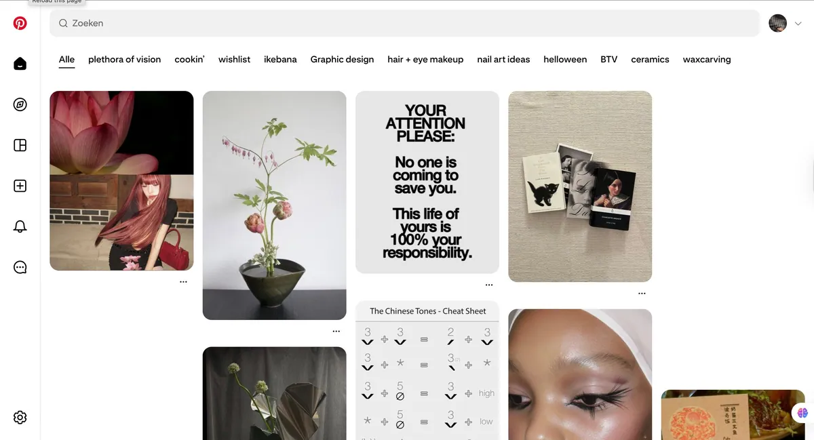
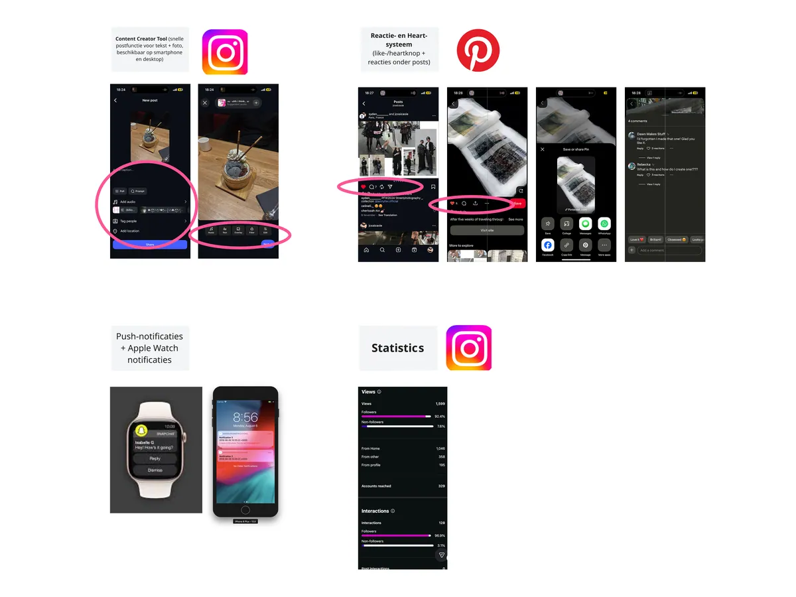
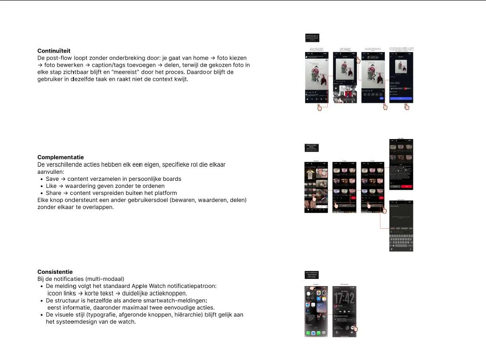
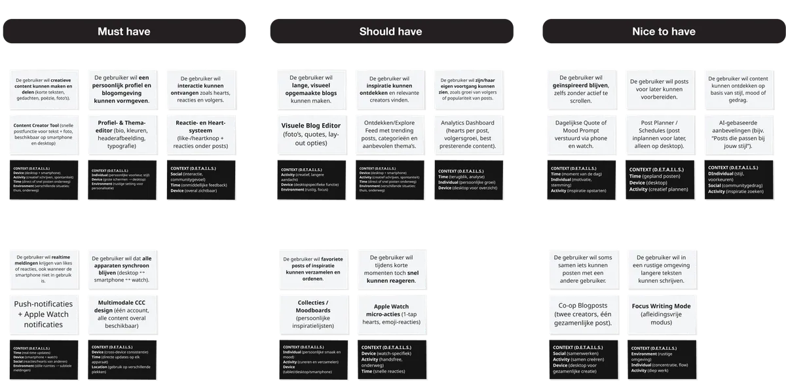
Structure
Mapping the journey and the flow between screens.
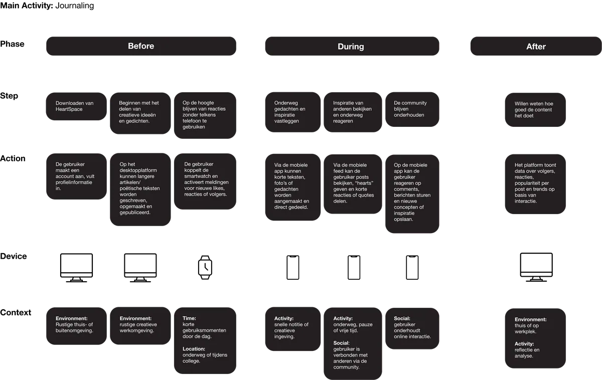
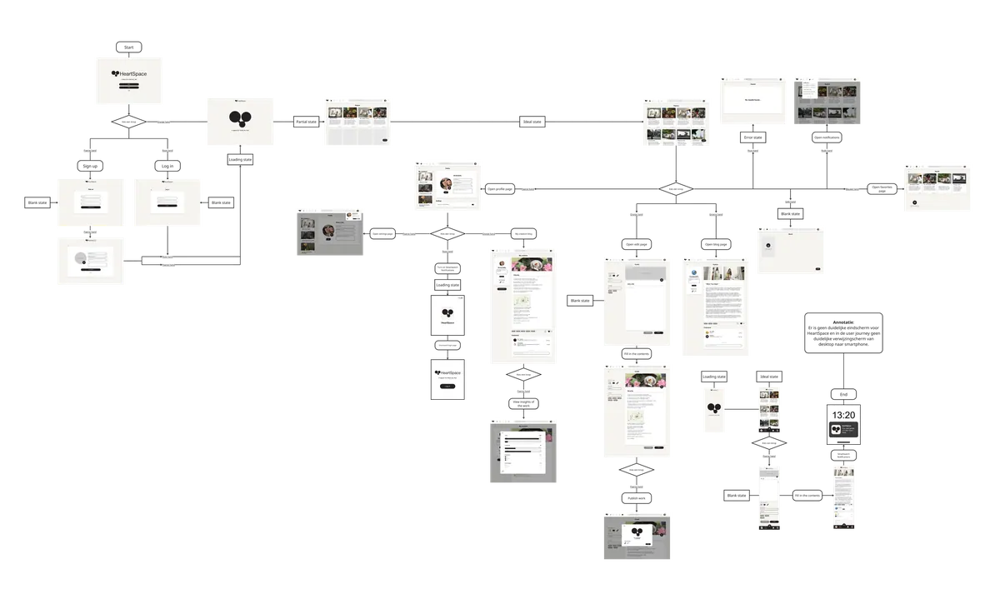
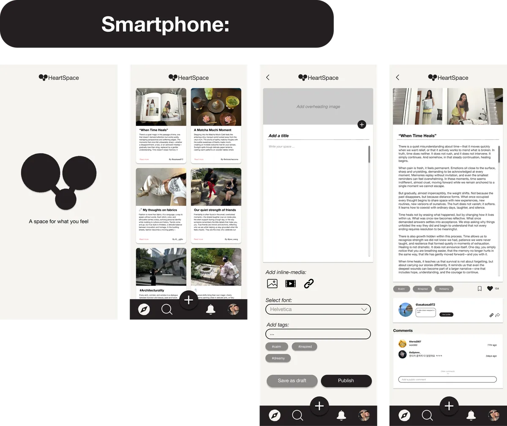
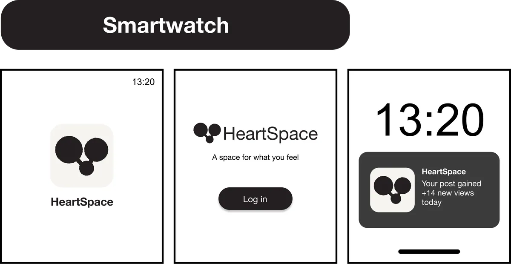
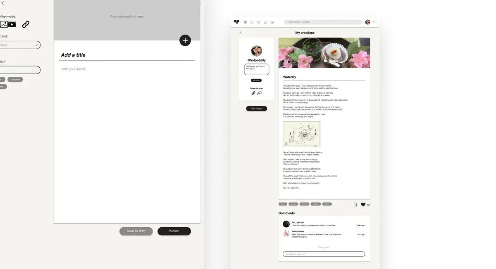
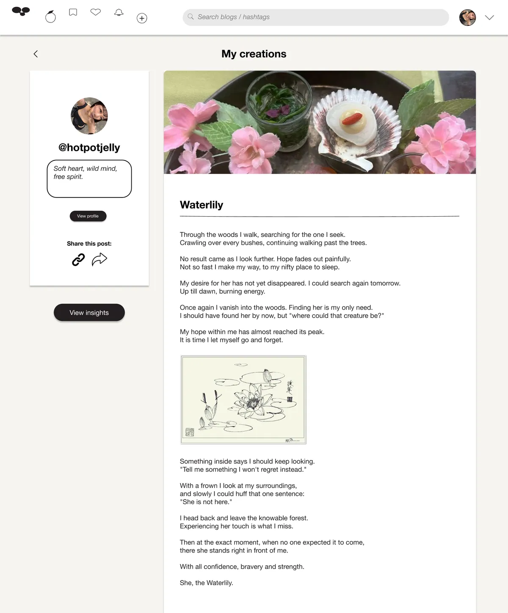
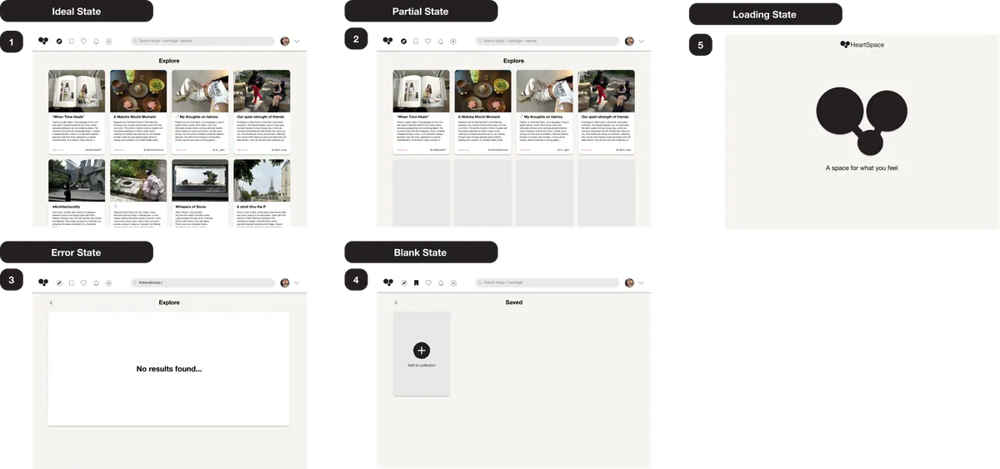